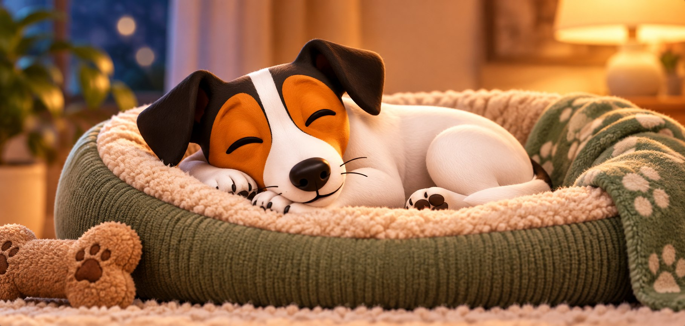

Hola, Santiago
Revisa la salud y el bienestar de tus mascotas.
Vista de demostración. Los datos son ficticios. El acceso con Google y las fichas reales se conectarán después de aprobar el diseño.
Todo el cuidado de Max, en un solo lugar
Consulta sus evaluaciones, próximas visitas, indicaciones y avances compartidos por Caselli's Pets.
Mis mascotas
Resumen de Max
Próxima visita
Control de evolución articular
Dic04
10:30 a. m. · Caselli's Pets
Traer los estudios anteriores y llegar 10 minutos antes.
Tratamiento actual
Plan de movilidad y fortalecimiento
Progreso registrado68%
InicioSemana 4Control
Evaluaciones recientes
Resultados guardados en la ficha de Max
🐾Bienestar articular15 de octubre de 2026 · Requiere seguimiento16/24
↗Evolución de movilidad2 de septiembre de 2026 · Evolución favorable74%
Novedades
Indicaciones y recordatorios
Las notificaciones reales se activarán cuando conectemos las cuentas.